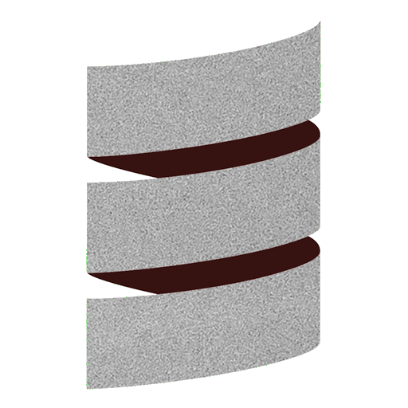

SNUnit
scaling down HTTP services with Scala Native and NGINX Unit
About me
Hi, I'm lolgab 👋
I'm a:- Computer Engineer
- Open Source contributor
- Maintainer of the com-lihaoyi ecosystem
- backend engineer working with Scala professionally for the last 4 years
Agenda
- Scala Native
- NGINX Unit
- SNUnit
- SNUnit internals
- Demo app
- What's coming next?
- Conclusions
Scala Native
What is Scala Native?
- Scala dialect that compiles to native binaries instead of JVM bytecode
- Uses the Clang C++ toolchain to generate native binaries
- Requires a scalac/dotty plugin which compiles Scala sources to a bytecode called NIR
- Requires a linking phase which links NIR files together, performing whole program optimization
Pros
- No JVM required (at runtime)
- Small executables
- Instant startup
- No warmup
- Lower memory usage
- Easy interoperability with C libraries
Cons
- Can't use Java libraries
- All your Scala libraries need to be published for Scala Native
- No multithreading yet
- Compile
onceeverywhere, run everywhere - Worse peak performance compared to JVM
- Long build times
What is NGINX Unit?
- It's NOT NGINX
-
It's a classic HTTP server
- Can serves static files
- Can manages TLS certificates and HTTPS
- Can proxy requests to other servers
- It's configurable via a JSON file or a REST API
- It's an application server
Why it's interesting for Scala Native
- It implements the HTTP stack for us
- It provides a easy to use C API
- Can run multiple processes of applications with load balancing
- Supports concurrency and asyncrony at application level
- It's fast
Basic JSON configuration
{
"listeners": {
"*:8080": {
"pass": "routes"
}
},
"routes": [
{
"action": {
"share": "static/$uri"
}
}
]
}
Application JSON configuration
{
"listeners": {
"*:8080": {
"pass": "applications/myapp"
}
},
"applications": {
"myapp": {
"executable": "out",
"type": "external",
}
}
}
SNUnit
What is SNUnit?
- Scala Native library to interface with NGINX Unit
- Uses the
externalmode - Scala Native application runs on a separate process
- Interfaces with the NGINX Unit server via IPC sockets and shared memory
- Communication is handled by the
libunit.alib - Thin middle layer between your favorite HTTP Scala libraries and libunit
Application Code
Your favorite Scala lib (tapir, http4s, cask, etc.)
SNUnit
libunit (NGINX Unit)
Supported APIs
TAPIR

Tapir Id hello world
import snunit.tapir.SNUnitIdServerInterpreter._
import sttp.tapir._
val helloWorld = endpoint.get
.in("hello")
.in(query[String]("name"))
.out(stringBody)
.serverLogicSuccess[Id](name => s"Hello $name!")
@main
def run =
snunit.SyncServerBuilder
.setRequestHandler(toHandler(List(helloWorld)))
.build()
.listen()
import snunit.tapir.SNUnitIdServerInterpreter._
import sttp.tapir._
val helloWorld = endpoint.get
.in("hello")
.in(query[String]("name"))
.out(stringBody)
.serverLogicSuccess[Id](name => s"Hello $name!")
@main
def run =
snunit.SyncServerBuilder
.setRequestHandler(toHandler(List(helloWorld)))
.build()
.listen()
Tapir cats-effect
import cats.effect._
import sttp.tapir._
val helloWorld = endpoint.get
.in("hello")
.in(query[String]("name"))
.out(stringBody)
.serverLogicSuccess[IO](name => IO(s"Hello $name!"))
object Main extends snunit.TapirApp:
def serverEndpoints
:Resource[IO, List[ServerEndpoint[IO, Any]]] =
Resource.pure(List(helloWorld))
import cats.effect._
import sttp.tapir._
val helloWorld = endpoint.get
.in("hello")
.in(query[String]("name"))
.out(stringBody)
.serverLogicSuccess[IO](name => IO(s"Hello $name!"))
object Main extends snunit.TapirApp:
def serverEndpoints
:Resource[IO, List[ServerEndpoint[IO, Any]]] =
Resource.pure(List(helloWorld))

import cats.effect._
import org.http4s._
import org.http4s.dsl.io._
def helloRoutes = Resource.pure(
HttpRoutes
.of[IO] { case GET -> Root =>
Ok("Hello Http4s App!")
}
.orNotFound
)
object Main extends snunit.Http4sApp:
def routes: Resource[IO, HttpApp[IO]] = helloRoutes
cask
object main extends cask.MainRoutes:
@cask.get("/hello")
def hello(name: String) =
s"Hello $name!"
@cask.post("/do-thing")
def doThing(request: cask.Request) =
request.text().reverse
initialize()
your own integration
???
SNUnit Internals
Live Demo
What's coming next?
in SNUnit
in NGINX Unit
Conclusions
Is Scala Native low level Scala?
- Yes, Scala Native allows manual memory management, using system calls directly, etc.
- No, above the implementation layer of libraries like SNUnit or porcupine, it's just plain old Scala
Is it worth it to leave the JVM?
- Probably not, you'll lose:
- immense battle tested ecosystem of libraries
- great performance
- everything just works
So, should I use SNUnit or not?
If:- your stack is supported (e. g.,
http4s+skunk) - you want to run on smaller machines (and save 💸)
- you want to run in a serverless environment
- you want to implement some endpoints in other languages (PHP, Python, Ruby, Go, Javascript, etc.)
- you want to delegate more things to the infrastructure, like static files sharing, TLS, certificates, etc.
Then you should consider using SNUnit
It's fun!